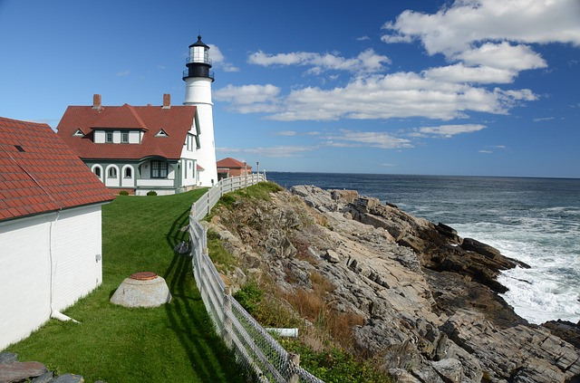
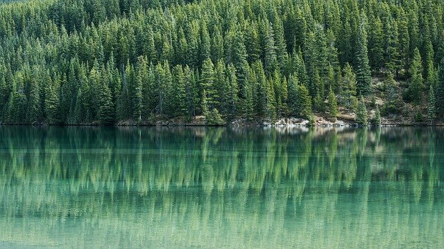

As visitors survey the scenic vistas of this historic city on Casco Bay, gaze at boats that come and go from the waterfront, and watch the activity along the downtown’s cobblestone streets, finding things to do may be the furthest thing from their minds. For those preferring to focus on filling their days with fun activities and enduring memories, Greater Portland delivers. Visitors will find family amusements, must-see attractions, day-trips, and nightlife for every taste and style and every family member.
Portland fulfills getaway, vacation, and long-term stay requirements each season of the year, from high-octane to low-key, indoor to outdoor, land or sea. This metropolitan city with small town charm is a cultural mecca and wildlife wonderland, the home of microbrews and sea cruises, of world-class chefs and first-class fishing, where shopping, sailing, or hitting the beach is at its best.
After a career of guiding kayakers from Baja to coastal Maine, Zack Anchors is on a mission to connect visitors and locals alike to wonders of Casco Bay. Portland is one of the best places to pick-up a paddle and explore hidden harbors, civil war-era forts, and plenty of easy-to-reach islands. His hope is that they, like him, fall in love with kayaking and begin to feel a sense of ownership of the waters that hug their shoreline.
 